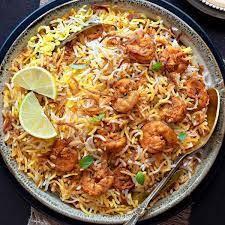

I am from ongole,India.I did my undergraduate from Vignan University in 2020.After my bachelors,I have been working as a associate system engineer in Birla Soft pvt.ltd.Basically,I like to explore different traditions & cultures.I love watching films often.
Prawn biryani is a dish made with layered rice and curried prawns spiced up with aromatic spices and cooked using the dum technique for a unique flavour. The 'Dum' or 'Dum Pukht' style of cooking this easy prawn biryani recipe calls for a heavy bottomed vessel with a lid
